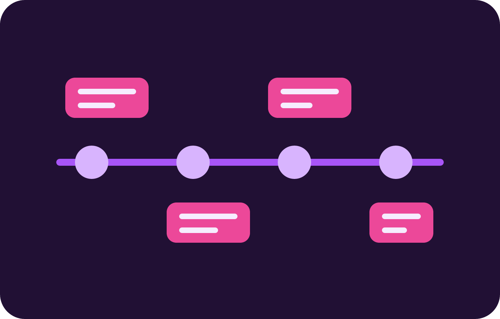

Conhecendo o Computador
Montagem teórica de uma configuração de computador, escolhendo cada componente e justificando as escolhas conforme a necessidade proposta.
Trabalho Final Web
Registro dos trabalhos feitos no semestre. A ideia é mostrar a evolução sem transformar o projeto em propaganda: cada card resume uma entrega real.
Linha do tempo
Montagem teórica de uma configuração de computador, escolhendo cada componente e justificando as escolhas conforme a necessidade proposta.
Exploração prática do Ubuntu para reconhecer seus componentes, navegar pela interface gráfica e pelo terminal e entender conceitos básicos de sistemas Linux.
Estudo de formas mais rápidas e organizadas de planejar trabalhos em equipe, com foco em metodologias ágeis.
Aplicação prática dos conceitos de Scrum: Product Backlog, User Stories, Kanban, Sprint e priorização de tarefas.
A partir da tipografia, dos arquétipos de Jung e da hierarquia tipográfica, escolhi fontes e criei um slogan pessoal, justificando as escolhas feitas.
Criação de uma identidade visual completa para um colega a partir de um briefing, com logo, cores, tipografia e aplicações da marca, depois trocando os papéis de cliente e designer.
Protótipo de baixa fidelidade para um app de música, aplicando conceitos de UX e UI com identidade visual própria.
Aula prática sobre Figma para criar protótipos de alta fidelidade, com cores, tipografia, ícones e interações próximas do produto final.
Simulação de um desafio na empresa fictícia TechStart Solutions: criar a estrutura base de uma página institucional usando apenas HTML puro.
Criação de uma página pessoal para apresentar meus projetos e meu contato.
Criação de uma página HTML autoral sobre música, publicada no GitHub usando linha de comando e repositório remoto.
Desenvolvimento de uma página com HTML e CSS externo, aplicando Flexbox, Grid e manipulação de imagens.
Projeto colaborativo "Viagens dos Sonhos", usando GitHub, branches e GitHub Pages, onde cada integrante criou sua própria página dentro de um site único.
Projeto colaborativo de tema livre, com GitHub, branches e GitHub Pages; o tema escolhido pelo grupo foi Secretaria Digital.
Aula sobre animações em CSS com @keyframes, explorando movimento, cores e a criação de um carrossel feito só com CSS.
Atividade prática de CSS Keyframes e animações avançadas, criando uma interface animada com tema Porsche.
Aula prática sobre Google Fonts e variáveis CSS, aplicando o conteúdo em uma página com tema Oscorp Industries.
Criar uma página web responsiva e animada em formato de timeline, usando apenas HTML5 e CSS3, mostrando a evolução no curso de Desenvolvimento Web ao longo do semestre.
registro pessoal
No início do semestre, eu já tinha noções de programação e já havia desenvolvido alguns projetos, como jogos, sites e havia alguns repositórios no GitHub. Porém, nunca havia me aprofundado tanto em HTML e CSS, pois não sentia vontade de ir atrás.

Ao longo do semestre, ampliei significativamente meus conhecimentos em desenvolvimento web. Hoje consigo estruturar páginas utilizando HTML semântico de forma organizada, aplicando boas práticas de desenvolvimento e acessibilidade. Também aprendi a utilizar CSS de maneira mais eficiente, trabalhando com cores, tipografia, espaçamentos, sombras, bordas e efeitos visuais. Além disso, aprofundei meus conhecimentos em Box Model, Flexbox, Grid Layout e responsividade com media queries, criando interfaces adaptáveis para diferentes dispositivos. Com animações em CSS e keyframes, passei a desenvolver páginas mais dinâmicas e visualmente atraentes.
Meu próximo objetivo é continuar evoluindo como desenvolvedor por meio de projetos cada vez mais completos e desafiadores. Pretendo aprofundar meus conhecimentos em JavaScript para criar aplicações mais interativas, manipular dados no navegador e desenvolver funcionalidades mais avançadas. Também quero estudar frameworks modernos de front-end e compreender melhor o funcionamento do back-end para ampliar minha visão sobre o desenvolvimento de sistemas. Além disso, pretendo continuar utilizando Git e GitHub para versionamento, colaboração e publicação dos meus projetos, construindo um portfólio que demonstre minha evolução técnica e minha capacidade de transformar ideias em soluções reais.